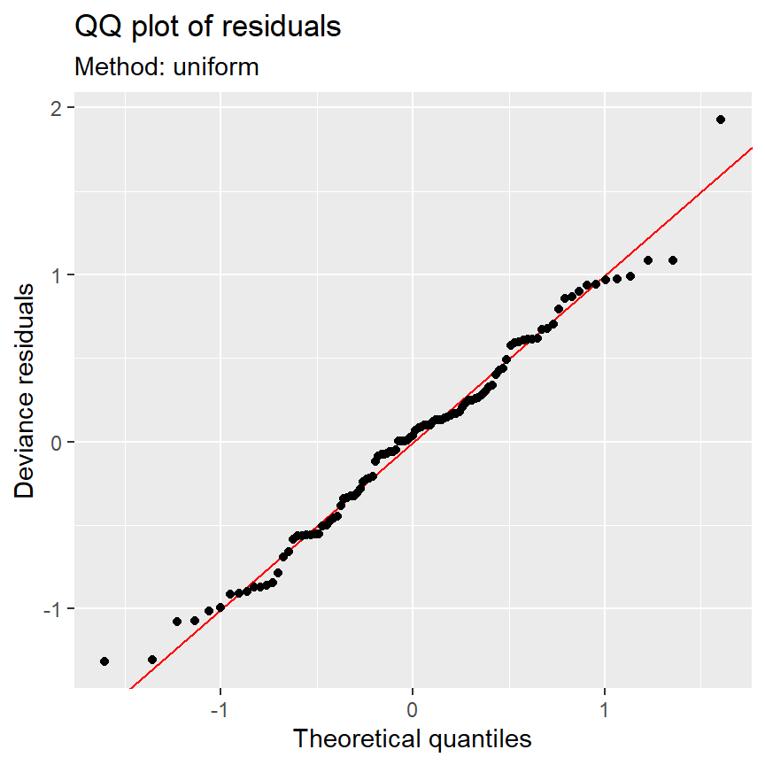

5 Additive modelling applied on stable isotope ratios of ocean squid
5.1 Stable isotope ratios of squid
同位体(isotope)とは、同じ原子であるが異なる中性子数を持つものを指す。そのうち、原子核が安定していて放射能を持たないものを安定同位体(stable isotope)という。例えば、炭素には2つの安定同位体(\(^{12}\rm{C}\)と\(^{13}\rm{C}\))が存在する。
同位体は同じ化学的性質を持つが、中性子の数が異なるので重さがわずかに異なる。重い同位体の方が体に残りやすいため、食物連鎖の上位に位置する動物ほど体組織に占める重い方の同位体の割合が多くなる。そのため、生態学では生態系におけるその種の栄養段階を調べるために、体組織中の2つの窒素同位体(\(^{15}\rm{N}\)と\(^{14}\rm{N}\))の比が用いられることがある。一方、栄養段階による安定同位体比の変化は炭素よりも窒素で大きいため、食物連鎖の下の方の生物には炭素同位体比が用いられることが多い。また、炭素の安定同位体比はその生物が生息する環境(海水域、淡水域、沿岸域、沖合など)によっても異なるため、その動物が属する生態系を特定するために炭素同位体比が用いられることもある。
ここでは、北大西洋の北極圏及び亜北極圏に豊富に生息し、様々な捕食者の餌となっているイカ(Gonatus fabricii)の安定同位体比(\(\delta^{13}\rm{C}, \delta^{15}\rm{N}\))を測定したMendes( Zuur (2012) の著者の一人)らの研究データを用いる。この研究は、井戸や水深、体サイズによって個体群内の安定同位体比が変わるかを調べることを目的としている。
5.2 The variables
データは以下の通り。
Lat：緯度
Depth: サンプルを採集した水深
ML: イカの外套膜の長さ
d15N: 窒素同位体比(\(^{15}\rm{N}\)の占める割合)
5.3 Data exploration
まずはデータ探索を行う。
図5.1は各変数のdotplotを示したものである。いずれの変数も外れ値のようなものはなさそうに見える。ただし、latとDepthについては連続値にもかかわらず同じ値のデータがたくさんある。これは、同時に(同じクルーズ中に)複数の検体を採集していることがあるからであり、これはデータの非独立性を生んでいる可能性がある。もし同じ場所で採集された検体が似た環境条件にさらされているとすると、これを考慮する必要がある。ひとまず今回は、全ての観察が独立であると仮定して分析を行う。
Squid %>%
mutate(no_sample = 1:n()) %>%
pivot_longer(cols = c(ML, d15N, Lat, Depth)) %>%
ggplot(aes(x = value, y = no_sample))+
geom_point(shape = 1,
alpha = 0.5)+
theme_bw()+
theme(aspect.ratio = 1)+
facet_rep_wrap(~name, repeat.tick.labels = TRUE,
scales = "free_x")+
labs(x = "Values", y = "Order of the data")図5.1: Cleveland dotplots for all variables. There are no clear outliers.
変数同士の散布図を示したのが図5.2である。図から、水深と緯度が中程度の相関を持っていることが分かるので、いずれかをモデルから除く方がよい。今回は水深を除く(6つの値しか取らないため)。ただし、第5.8節では両方含めた場合の結果も確認する。
図5.2: Multi-panel scatterplot with Pearson correlation coefficients.
目的変数(d15N)とそのほかの変数の関係をより詳しく調べる(図5.3)。水深と緯度は窒素同位体比とあまり関係がなさそうだが、外套膜の長さは安定同位体比と強く関連しているように見える。この関係は線形と非線形のどちらだろうか?また、分散は外套膜が長いほど大きくなっているように見えるが、実際にそうだろうか?
Squid %>%
pivot_longer(cols = c(Depth, Lat, ML)) %>%
ggplot(aes(x = value, y = d15N))+
geom_point()+
facet_rep_wrap(~name, repeat.tick.labels = TRUE,
scales = "free_x")+
geom_smooth(method = "loess", se = FALSE, span = 0.9)図5.3: Multi-panel scatterplot showing the relationship between d15N and the three covariates. A LOESS smoother was added to aid visual interpretation.
5.4 Brain storming
さて、以下では窒素同位体比(d15N)を緯度(Lat)と外套膜の長さ(ML)の関数としてモデリングする。図5.3を見る限りはMLとd15Nの関係は線形だが、もしかすると緯度と外套膜長の交互作用を考えると、変数間の関係は非線形になるかもしれない。
まずは交互作用がなく、smootherが2つあるGAMが考えられる。
\[
\begin{aligned}
d15N_i &= \alpha + f_1(Lat_i) + f_2(ML_i) + \epsilon_i\\
\epsilon_i &\sim N(0, \sigma^2)
\end{aligned} \tag{5.1}
\]
しかし、緯度は9つの値しか取らないのでsmootherを推定するには不十分である。よって以下のモデルの方が適当だろう。
\[ \begin{aligned} d15N_i &= \alpha + \beta \times Lat_i + f_2(ML_i) + \epsilon_i\\ \epsilon_i &\sim N(0, \sigma^2) \end{aligned} \tag{5.2} \]
あるいは、いずれも線形な関係を持つと仮定するモデルを考えることもできる。
\[ \begin{aligned} d15N_i &= \alpha + \beta_1 \times Lat_i + \beta_2 \times ML_i + \epsilon_i\\ \epsilon_i &\sim N(0, \sigma^2) \end{aligned} \tag{5.3} \]
以下では、式(5.2)と式(5.3)のモデルについてみていく。まずは重回帰分析を行ったのち(式(5.2))、加法モデルを適用してどちらが適切かを考えていく。
5.5 Applying the multiple linear regression model
式(5.3)のモデルは以下のように実行できる。
まずはモデル診断を行う。標準化残差とモデルの予測値、外套膜の長さの関係をプロットしたのが図5.4である。図5.4のAを見る限り、残差は概ね均等に分布しているように見える。すなわち、分散の不均等性はないようだ。図5.4のBにもパターンは見られず、外套膜長と窒素同位体比に非線形性はないように思える。
data.frame(resid = rstandard(M5_1),
fitted = fitted(M5_1)) %>%
ggplot(aes(x = fitted, y = resid))+
geom_point(shape =1)+
geom_hline(yintercept = 0,
linetype = "dashed")+
theme_bw()+
theme(aspect.ratio = 1)+
labs(x = "Fitted values", y = "Standardized residuals",
title = "A") -> p1
data.frame(resid = rstandard(M5_1),
ML = Squid$ML) %>%
ggplot(aes(x = ML, y = resid))+
geom_point(shape =1)+
geom_hline(yintercept = 0,
linetype = "dashed")+
theme_bw()+
theme(aspect.ratio = 1)+
labs(x = "Mantel length", y = "Standardized residuals",
title = "B") -> p2
p1 + p2図5.4: A: Residuals versus fitted values. B: Residuals versus mantle length.
しかし、実際に非線形性がないかはきちんと調べる必要がある。調べる一つの方法は、標準化残差に対して以下のモデルを適用することである。モデルに切片を含めなかったのは、標準化残差は平均が0になるからである。
\[ \begin{aligned} e_i &= f(ML_i) + \eta_i\\ \eta &\sim N(0,\sigma_{\eta}^2) \end{aligned} \]
Rでは以下のように実行できる。
結果は以下の通り。smootherは有意であることから、標準化残差と外套膜長の関係は非線形であることが分かる。
##
## Family: gaussian
## Link function: identity
##
## Formula:
## E ~ -1 + s(ML)
##
## Approximate significance of smooth terms:
## edf Ref.df F p-value
## s(ML) 2.537 3.19 4.861 0.0029 **
## ---
## Signif. codes: 0 '***' 0.001 '**' 0.01 '*' 0.05 '.' 0.1 ' ' 1
##
## R-sq.(adj) = 0.141 Deviance explained = 15.4%
## GCV = 0.89241 Scale est. = 0.87084 n = 105図5.5は推定されたsmootherを図示したものである。
図5.5: Smoothing function of ML obtained by applying an additive model on the residuals of the multiple linear regression model in Equation (5.3).
5.6 Applying an additive model
それでは、加法モデルを適用する。式(5.2)のモデルは以下のように実行できる。
結果は以下の通り。緯度は5%水準で窒素同位体比と有意に正に関連していた。また、smootherの自由度は2.57であり有意だった。\(R^2\)値は0.578であり、データのばらつきの60%近くがモデルによって説明されている。smootherは薄板平滑化スプラインによって推定されている。
##
## Family: gaussian
## Link function: identity
##
## Formula:
## d15N ~ s(ML) + Lat
##
## Parametric coefficients:
## Estimate Std. Error t value Pr(>|t|)
## (Intercept) 8.81246 1.45034 6.076 2.22e-08 ***
## Lat 0.05409 0.02086 2.593 0.0109 *
## ---
## Signif. codes: 0 '***' 0.001 '**' 0.01 '*' 0.05 '.' 0.1 ' ' 1
##
## Approximate significance of smooth terms:
## edf Ref.df F p-value
## s(ML) 2.577 3.246 43.71 <2e-16 ***
## ---
## Signif. codes: 0 '***' 0.001 '**' 0.01 '*' 0.05 '.' 0.1 ' ' 1
##
## R-sq.(adj) = 0.578 Deviance explained = 59.2%
## GCV = 0.40038 Scale est. = 0.38293 n = 105図5.6は推定されたsmootherである。smootherは外套膜長と窒素同位体比の関係が非線形であることを示唆している。
図5.6: Estimated thin plate regression spline for mantle length. Residuals are added.
モデル診断を行う。図5.7は残差とモデルの予測値、共変量、水深の関係をプロットしたものと、残差のヒストグラムを描いたものである。特にパターンは見られず、モデルの前提が満たされているように見える。
data.frame(resid = resid(M5_2),
fitted = fitted(M5_2)) %>%
ggplot(aes(x = fitted, y = resid))+
geom_point(shape =1)+
geom_hline(yintercept = 0,
linetype = "dashed")+
theme_bw()+
theme(aspect.ratio = 1)+
labs(x = "Fitted values", y = "Residuals",
title = "A") -> p1
data.frame(resid = resid(M5_2),
ML = Squid$ML) %>%
ggplot(aes(x = ML, y = resid))+
geom_point(shape =1)+
geom_hline(yintercept = 0,
linetype = "dashed")+
theme_bw()+
theme(aspect.ratio = 1)+
labs(x = "Mantel length", y = "Residuals",
title = "B") -> p2
data.frame(resid = resid(M5_2),
Lat = Squid$Lat) %>%
ggplot(aes(x = Lat, y = resid))+
geom_point(shape =1)+
geom_hline(yintercept = 0,
linetype = "dashed")+
theme_bw()+
theme(aspect.ratio = 1)+
labs(x = "Latitude", y = "Residuals",
title = "C") -> p3
data.frame(resid = resid(M5_2),
Depth = Squid$Depth) %>%
ggplot(aes(x = Depth, y = resid))+
geom_point(shape =1)+
geom_hline(yintercept = 0,
linetype = "dashed")+
theme_bw()+
theme(aspect.ratio = 1)+
labs(x = "Depth", y = "Residuals",
title = "D") -> p4
data.frame(resid = resid(M5_2)) %>%
ggplot(aes(x = resid))+
geom_histogram(fill = "white",
color = "black",
bins = 12)+
theme_bw()+
theme(aspect.ratio = 1)+
labs(x = "Reisduals", y = "Frequency",
title = "E") -> p5
data.frame(resid = resid(M5_2)) %>%
arrange(resid) %>%
mutate(n = 1:n()) %>%
ggplot(aes(x = n, y = resid))+
geom_col()+
theme_bw()+
theme(aspect.ratio = 1)+
labs(x = "Sorted residuals", y = "Residuals",
title = "F") -> p6
(p1+p2+p3)/(p4+p5+p6)図5.7: Model validation graphs for the additive model in Equation ( 5.2). A: Residuals versus fitted values. B: Residuals versus ML. C: Residuals versus latitude. D: Residuals versus depth. E: Histogram of residuals. F: Sorted residuals.
QQプロットもおおむねよく当てはまっている。

5.7 Testing linearity versus non-linearity
加法モデルで推定されたsmootherの自由度は2.577であり、線形モデルの場合(= 1)と大きく違うわけではない。どのようなときに線形モデルではなく加法モデルを使った方がよいと判断すべきだろうか。
以下の事実は加法モデルを使うべきだとする主張を支持する。
- 重回帰分析の結果から、外套膜長と標準化残差に非線形の関係がみられることが確かめられた。
- 加法モデルのモデル診断では問題が見つからなかった。
gam関数の交差検証によって、自由度が2.577だと推定された。
これらに加えて、AICも加法モデルがより良いモデルであることを示唆している。
また、F検定によってそちらのモデルが優れているかを判断することもできる。ただし、この結果の解釈には注意が必要である。一般にp値が0.001以下であればsmootherの効果が十分にあるといえる。
他の種類のsmootherでも同様の結果がみられるか確かめることで、加法モデルの方が線形モデルより適切かを検討することもできる。例えば、以下のように3次回帰スプラインでも自由度は2.57と推定され、データに非線形な関係があることが支持される。
##
## Family: gaussian
## Link function: identity
##
## Formula:
## d15N ~ s(ML, bs = "cr") + Lat
##
## Estimated degrees of freedom:
## 2.57 total = 4.57
##
## GCV score: 0.4003235.7.1 Programming a smoother manually
最後に、手動で加法モデルを適用してみることで加法モデルの方が線形モデルより適切であることを確かめる。
第3章で見たように、smootherは基底を\(b_j(ML_i)\)のように書くとき、以下のように表すことができる。
\[
f(ML_i) = \sum_{j = 1}^K \beta_j \times b_j(ML_i)
\]
例えば、二次スプライン回帰であればsmootherは以下のように書けた(第3.5節)。ここで、\(k_j\)は内側のノットである。
\[
f(ML_i) = \alpha + \beta_1 \times ML_i + \beta_2 \times ML_i^2 + \sum_{j = 1}^K \beta_{1j} (ML_i - \kappa_j)_+^2
\]
よって、式(5.2)のモデルは以下のように書ける。
\[
\begin{aligned}
d15N_i &= \alpha + \beta_0 \times Lat_i + \beta_1 \times ML_i + \beta_2 \times ML_i^2 + \sum_{j = 1}^K \beta_{1j} (ML_i - \kappa_j)_+^2 + \epsilon_i\\
\epsilon_i &\sim N(0, \sigma^2)
\end{aligned} \tag{5.4}
\]
ここから、式(5.3)の線形モデルと加法モデル(式(5.4))はネストしていることが分かる。よって、この2つのモデルにF検定をするとき、式(5.4)で\(\beta_2 = \beta_{11} = \beta_{12} = \cdots = 0\)という帰無仮説を検定していることになっている。他の加法モデルについても基本的に同様のことが言える。
以下では、3次自然スプラインを手動で適用することでこのことを確かめる。以下のモデルでは、数学的な問題を回避するために外套膜長を0から1にスケールする。
また、内側のノットは3つにする。外側を含めたノットの値は以下の通り。
## 0% 25% 50% 75% 100%
## 0.0000000 0.1708333 0.2916667 0.4708333 1.00000003次自然スプラインにおいて規定は以下のように定義される。なお、\(K\)は内側のノット数である。
\[
\begin{aligned}
b_1(MLsc_i) &= 1\\
b_2(MLsc_i) &= MLsc_i\\
b_{k+2}(MLsc_i) &= d_k(MLsc_i) - d_{K-1}(MLsc_i)\\
d_k(MLsc_i) &= \frac{(MLsc_i - \kappa_k)_+^3 - (MLsc_i - \kappa_K)_+^3}{\kappa_K - \kappa_k}
\end{aligned}
\]
なお、第@red(c3)で見たように、\((MLsc_i - \kappa)_+\)は以下のように定義される。
\[
(MLsc_i - \kappa)_+ =
\begin{cases}
0 & (MLsc_i < \kappa)\\
MLsc_i - \kappa & (MLsc_i ≧ 0\kappa\\
\end{cases}
\]
Rで\((MLsc_i - \kappa)_+\)、\(d_k\)を作成する関数と、基底\(b_k(MLsc_i)\)を作成する関数を作成する。
rhs <- function(x, TH){ifelse(x >= TH, (x-TH)^3, 0)}
dk <- function(x, TH, K){(rhs(x,TH) - rhs(x, K))/(K - TH)}
## 以下、誤っている可能性。教科書通りの定義ならK-1はK-1番目のκを指定する必要がある。
bj <- function(x, TH, K){dk(x, TH, K) - dk(x, K-1, K)}これらを利用して3次自然スプラインを適用すると以下のようになる。
M5_4 <- lm(d15N ~ 1 + Lat + MLsc + bj(MLsc, q_ML[2], q_ML[4]) + bj(MLsc, q_ML[3], q_ML[4]),
data = Squid)\(b_j\)を含む説明変数の行列は以下のように取り出せる。
## (Intercept) Lat MLsc bj(MLsc, q_ML[2], q_ML[4])
## 1 1 62.98 0.6583333 -1.3037500
## 2 1 64.67 0.3291667 -0.6191341
## 3 1 64.67 0.4750000 -0.9187500
## 4 1 64.67 0.3166667 -0.5947996
## 5 1 64.67 0.5125000 -0.9975000
## 6 1 64.67 0.2416667 -0.4568322
## bj(MLsc, q_ML[3], q_ML[4])
## 1 -1.4296181
## 2 -0.6320708
## 3 -0.9781597
## 4 -0.6050507
## 5 -1.0705035
## 6 -0.4580169推定された回帰係数は以下の通り。
## (Intercept) Lat
## 6.96611562 0.05567002
## MLsc bj(MLsc, q_ML[2], q_ML[4])
## 4.19388641 -17.04870266
## bj(MLsc, q_ML[3], q_ML[4])
## 15.64702422smootherは切片を含めない場合以下のように計算できる。
gam()関数の結果で出力されるようにsmootherを中心化するには以下のようにする。
smootherを図示すると以下のようになる(図5.8)。図5.6とよく似た曲線が推定された。
data.frame(MLsc = Squid$MLsc,
fitted = smoother_center,
resid = resid(M5_4) + smoother_center) %>%
ggplot()+
geom_line(aes(x = MLsc, y = fitted),
linewidth = 1)+
geom_point(aes(x = MLsc, y = resid),
shape = 1)+
geom_vline(data = data.frame(MLsc = q_ML),
aes(xintercept = MLsc))+
theme_bw()+
theme(aspect.ratio = 1)+
labs(x = "Scaled ML", y = "Smoothing function ML")図5.8: Estimated cubic spline using our self-programmed code.
さて、ここで3次自然スプラインモデルを通常の線形回帰モデルと比較する。
F検定を行うと有意だった。これは、\(b_3\)と\(b_4\)にかかる回帰係数が0であるという帰無仮説が棄却されたことを表す。このことから、加法モデルを適用することがより適切だということができる。
5.8 Consequence of ignoring collinearity in the additive model
さて、ここまでのモデルは水深と緯度に相関があるため緯度のみをモデルに含めてきた。これらを同時にモデルに含めるとどうなるのだろうか。
以下のモデルを考える。
\[
\begin{aligned}
d15N_i &= \alpha + f_1(Lat_i) + f_2(ML_i) + f_3(Depth_i) + \epsilon_i\\
\epsilon_i &\sim N(0, \sigma^2)
\end{aligned}
\]
しかし、Rで実行すると以下のようなエラーが出る。これは、緯度と水深がとる固有の値が少ないからである。
## Error in smooth.construct.tp.smooth.spec(object, dk$data, dk$knots): A term has fewer unique covariate combinations than specified maximum degrees of freedomここで、緯度と水深をsmootherにしないという選択肢もあるが、ここでは自由度の上限を決めることで対処する。
結果は以下の通り。水深のsmootherの自由度は1なので、有意ではないが線形であると推定されている。緯度のsmootherの自由度は1.49なので、わずかに非線形である。外套膜長のsmootherの自由度は先ほどとほとんど変わっていない。この結果は、この例では緯度と水深の多重共線性が加法モデルにおいてそこまで大きな問題を引き起こしていないことを示している。おそらく今回は外套膜長のみが窒素同位体比と強い関係を持っていたため、多重共線性の影響を受けることがなかったのだろう。いずれにしても、推定結果に大きな影響を及ぼすこともあるので多重共線性には常に注意を払う必要がある。
##
## Family: gaussian
## Link function: identity
##
## Formula:
## d15N ~ s(Lat, k = 4) + s(Depth, k = 4) + s(ML)
##
## Parametric coefficients:
## Estimate Std. Error t value Pr(>|t|)
## (Intercept) 12.56952 0.06025 208.6 <2e-16 ***
## ---
## Signif. codes: 0 '***' 0.001 '**' 0.01 '*' 0.05 '.' 0.1 ' ' 1
##
## Approximate significance of smooth terms:
## edf Ref.df F p-value
## s(Lat) 1.491 1.776 2.369 0.0621 .
## s(Depth) 1.000 1.000 0.209 0.6486
## s(ML) 2.566 3.233 39.058 <2e-16 ***
## ---
## Signif. codes: 0 '***' 0.001 '**' 0.01 '*' 0.05 '.' 0.1 ' ' 1
##
## R-sq.(adj) = 0.58 Deviance explained = 60%
## GCV = 0.40446 Scale est. = 0.38113 n = 1055.9 Discussion
加法モデルの結果は外套膜長と窒素同位体比の間に非線形的な関係があることを示し、緯度と炭素同位体比の間には明確な関係がみられなかった。この分析では同じ場所でサンプルされたデータを独立なものだとみなしたが、もしこれらが独立でないならば採集場所の情報をランダム効果に含める必要がある。なお、今回のデータはサンプルサイズも大きくないのでランダム効果を含めて混合モデルにするには適していない。
5.10 What to present in a paper
実際の論文では以下のことに言及する必要がある。
方法ではデータ探索を行い、外れ値や多重共線性、変数間の関係について調べたことに言及する必要がある。結果では緯度と水深の多重共線性に触れる必要がある。
方法で加法モデルのモデル式を示し、データに独立性があることに言及する必要がある。結果では推定されたsmootherの情報と結果をプロットした図を示す必要がある。
方法ではモデル診断を行ったこと、またその結果を報告する必要がある。ただし、論文中に図を含める必要はない(場合によってはsupplementaryに)。
モデルが序論で提示されたリサーチクエスチョンに合致しており、考察が結果に対応しているかを確認する。
考察では、緯度に見られたわずかな効果が水深の効果である可能性にも言及する必要がある。これらは相関しているからである。